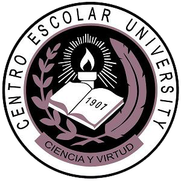

Centro Escolar University was established on June 3, 1907 by Doña Librada Avelino and Doña Carmen de Luna for the instruction and training of the youth in all branches of the arts and sciences. With some benches, a single blackboard and a few books, the two educators steadfastly nurtured a dream of establishing a nationalistic center of learning for Filipino women. The first college, that of Pharmacy, opened in 1921. The College of Liberal Arts, Education and Dentistry followed one after the other. Three years later, the College of Optometry was established.
With three campuses and over 50 academic programs, CEU has gone far beyond its founders' vision, building steps towards dreams and goals of the Filipino youth.